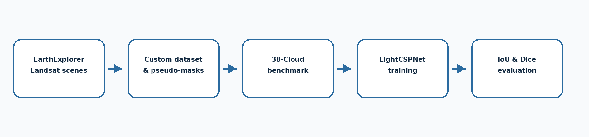
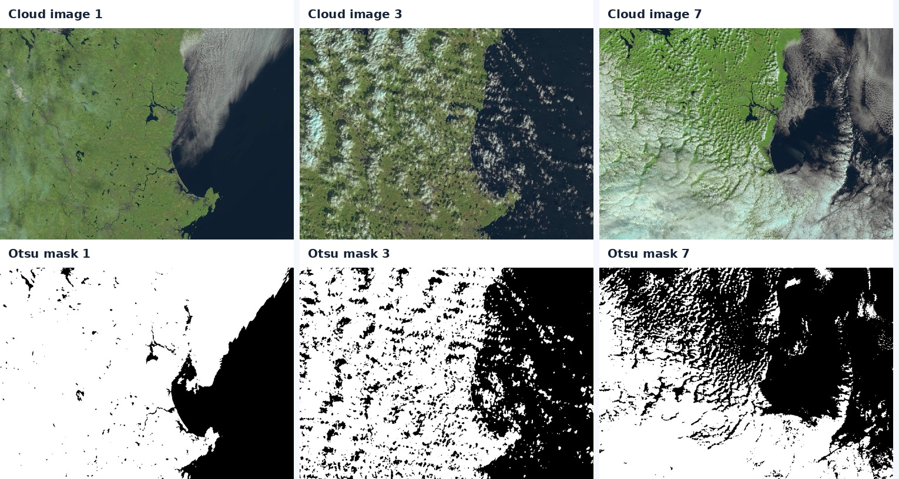
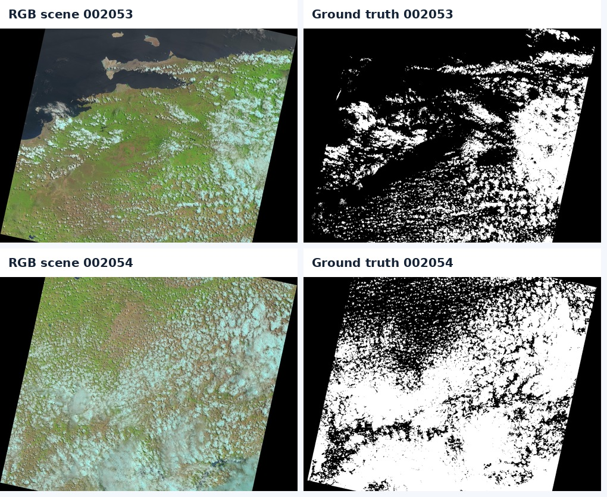

A cloud-segmentation pipeline for Landsat 8 scenes. The work moved through three stages: raw scenes from USGS EarthExplorer, a hand-assembled experimental dataset with Otsu / brightness pseudo-masks, and finally supervised training and evaluation on the annotated 38-Cloud benchmark.
LightCSPNet is a compact encoder–decoder: convolutional blocks, progressive downsampling, bilinear upsampling, a high-resolution skip connection, and weighted binary cross-entropy to handle heavy cloud/background imbalance.
| Model | IoU | Dice |
|---|---|---|
| CLIP patch classifier | 0.40 | 0.57 |
| SegFormer / ViT (zero-shot) | 0.59 | 0.74 |
| LightCSPNet | 0.7327 | 0.8457 |
Values are traceable to the project manuscript. The original best-run notebook was lost; the repo ships a reconstructed, unexecuted reference implementation rather than presenting the numbers as re-reproduced.


